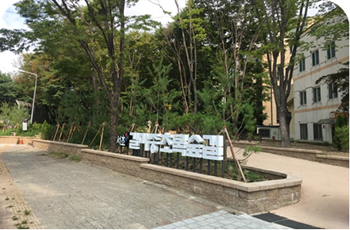
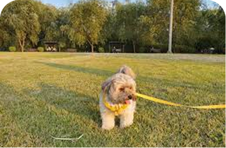

견종별 적정 산책거리
우리 댕댕이 산책기록
매일, 매주, 매달 산책거리와 평균심박수, 건강도를 확인해보세요!
산책거리
평균심박수
건강도 점수
건강 리포트

산책 데이터를 기반으로 AI가 건강 상태를 분석해드려요.
리포트 요약
- 총 산책거리
- 평균 심박수
- 건강도
- 목표 달성률
Ai피드백
📍 Best 산책코스 추천
나의 위치 기반으로 다른 사람들이 추천한 산책코스를 즐겨보세요!

서초 행복길 산책로
📍 서울특별시 서초구
거리: 4.5km
소요시간: 2시간 30분
5개 순환코스로 재정비한 서초 행복둘레길에서 반려견과..

길마중길 산책로
📍 서울특별시 서초구
거리: 3.5km
소요시간: 2시간
“서초둘레길”이라고도 불리는 길마중길에서 행복한...

반포 한강공원 산책로
📍 서울특별시 서초구
거리: 1.2km
소요시간: 30분
강변을 따라 걷는 평지 코스로 반려견과 함께 걷기 좋아요.
몽마르뜨 공원 산책로
📍 서울특별시 서초구
거리: 2.8km
소요시간: 1시간
누에다리, 언덕, 잔디밭 코스를 다니며 반려견과...
길마중길 산책로
📍 서울특별시 서초구
거리: 3.5km
소요시간: 2시간
“서초둘레길”이라고도 불리는 길마중길에서 행복한...
산책 동반자 커뮤니티

산책이 심심하다면, 커뮤니티에서 함께할 친구를 찾아보세요!